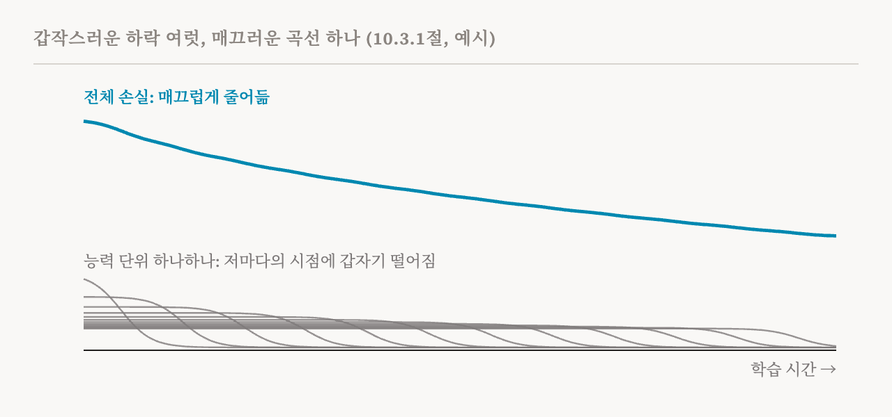
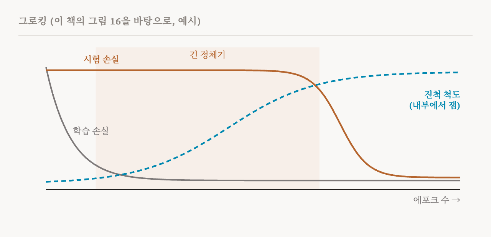

26편은 학습하는 동안 모델이 서서히 바뀌는 모습을 지켜봤습니다. 이번 편은 이 책의 10.3절(86–90쪽)로, 서서히 일어나지 않는 변화를 다룹니다.
평균은 매끄러워도 세부는 갑작스럽다
학습 손실 곡선을 보면 보통 언어 모델이 서서히, 꾸준하게 나아지는 것처럼 보이고, 평균적으로는 실제로 그렇습니다. 모델 크기와 데이터 양으로 손실을 예측하는 규모 법칙이 서술하는 것이 바로 이것입니다. 하지만 개별 능력은 전혀 다른 이야기를 들려줍니다. 많은 과제에서 성능은 모델 크기에 따라서도, 학습이 진행됨에 따라서도 가파르고 갑작스럽게 바뀔 수 있습니다. 이는 모델이 상전이를 겪는다는 것을 시사합니다. 규모나 학습 시간을 조금 늘렸을 뿐인데 행동이 질적으로 바뀌는 것입니다.
이런 급격한 변화는 모델 안에서도 나타납니다. 어텐션 헤드는 학습의 짧은 구간 안에 서로 다른 역할로 분화할 수 있고, 유도 헤드나 문법을 따르는 어텐션 패턴이 생겨나는 것은 행동의 갑작스러운 변화와 연결되어 왔습니다. 하지만 이 책은 행동의 변화와 내부의 변화가 같은 시점에 일어나거나 똑같이 갑작스러울 필요는 없다고 짚습니다. 능력은 갑자기 나타나는데 그 밑의 메커니즘은 서서히 발달할 수도 있습니다. 아래에서 볼 그로킹이 가장 분명한 예입니다. 그래서 이 책은 '상전이'를 넓은 뜻으로 씁니다. 행동이나 표현에서 일어나는 모든 질적인 변화를 가리키되, 그 변화들이 함께 일어난다거나 한순간에 일어난다고 가정하지 않습니다.
상전이가 안전에 중요한 이유는 예측을 어렵게 하기 때문입니다. 규모나 학습 시간을 조금 늘리는 것만으로 어떤 능력이 나타날 수 있다면, 중간 체크포인트의 행동을 시험해 봐도 최종 모델에 대해서는 제한적인 보증밖에 얻지 못합니다. 작은 모델에 맞춘 규모 법칙도 큰 모델에 대해서는 알려 주는 것이 적습니다. 모델이 위험한 능력을 얻을지, 언제 얻을지 예측하려면 전이가 어떻게, 언제 일어나는지 이해해야 합니다. 이 책은 이 절을 학습 실행 하나를 손에 쥔 연구자의 작업 순서로 짜 놓았습니다. 전이를 찾아내고, 그 밑에 무엇이 있는지 재고, 구성 요소에 귀속시키고, 왜 일어나는지 설명합니다. 그리고 19편에서 이미 소개한 유도 헤드 사례 연구로 끝납니다.
전이 찾아내기
첫 번째 어려움은 전체 손실이 개별 능력의 갑작스러운 변화를 가릴 수 있다는 것입니다. 2023년에 나온 신경망 규모 법칙의 양자화 모형에 따르면, 모델은 능력을 띄엄띄엄한 단위로 배우고 각 단위는 갑자기 나타날 수 있습니다. 그래도 이 단위들은 데이터에서 나오는 빈도가 서로 달라서, 합친 손실은 여전히 매끄럽게 줄어들 수 있습니다. 전체 손실 곡선이 매끄러운데도 학습 시간과 모델 크기 양쪽에서 갑작스러운 변화가 일어날 수 있는 이유를 설명하는 데 도움이 됩니다.

그래서 연구자들은 여러 수준의 세밀함으로 살펴봅니다. 가장 거친 도구는 전체 손실 곡선 자체입니다. 전체 성능에 영향을 줄 만큼 큰 전이는 곡선에 작은 혹으로 나타나고, 손실 곡선의 변화율에서는 국소적인 봉우리로 보입니다. 하지만 대부분의 전이는 이런 식으로 보기에는 너무 작습니다. 그래서 변화율이 평평하다고 해서 아무 일도 없었다는 증거가 되지는 않습니다.
능력 하나를 겨냥한 지표를 체크포인트마다 확인하면 전체가 가리는 전이를 골라낼 수 있습니다. 이 책이 본보기로 드는 것은 2022년 유도 헤드 연구의 맥락 내 학습 점수로, 맥락의 500번째 토큰에서의 손실에서 50번째 토큰에서의 손실을 뺀 값입니다. 각각의 손실은 짧은 맥락을 전반적으로 얼마나 잘 다루는지처럼 맥락 내 학습과 상관없는 요인에 크게 좌우됩니다. 둘의 차이를 보면 모델이 늘어난 맥락에서 얻는 이득만 따로 떼어 낼 수 있습니다. 체크포인트마다 재 보면 이 점수는 학습의 좁은 구간에서 갑자기 바뀌는데, 바로 유도 헤드가 생기는 구간입니다. 같은 구간에서 전체 손실에는 작은 혹 하나만 나타납니다(19편의 두 번째 도판). 벤치마크 정확도를 체크포인트마다 따라가도 더 거칠게나마 전이를 찾을 수 있고, 시드가 다른 실행들을 비교하면 그 전이가 일관된지 알 수 있습니다.
어떤 전이는 미리 정한 어떤 지표에도 보이지 않지만, 학습 데이터 자체에서 되찾을 수 있습니다. 2026년의 POLCA라는 방법은 예시마다의 손실 변화를 학습이 실제로 움직이는 몇 안 되는 방향들로 나누고, 시간에 따라 손실이 비슷하게 바뀌는 예시들을 묶습니다. 그렇게 묶인 무리들은 학습의 특정 시점에 갑자기 학습된 개념에 대응하는데, 전체 곡선에는 그에 맞는 사건이 보이지 않습니다. 더 거친 수준에서는 잠재 상태 모형이 쓰입니다. 시스템이 몇 개의 숨은 상태 사이를 옮겨 다닌다고 보는 통계 모형인 은닉 마르코프 모형을 여러 학습 측정값에 맞춰서, 학습 실행을 띄엄띄엄한 국면들로 나눕니다. 상태가 바뀌는 지점이 발달상의 사건 후보가 됩니다.
창발은 측정이 만든 착시인가
이 책은 잘 알려진 반론 하나에 상자 하나를 할애합니다. 2023년의 한 연구는 2022년에 보고된 창발 능력들이 불연속적인 지표가 만든 착시라고 주장했습니다. 밑에 있는 로그 가능도가 매끄럽게 나아지는 동안에도 정확히 일치해야 맞는 것으로 치는 정확도는 껑충 뛸 수 있다는 것입니다. 이 주장을 예로 풀어 보면, 답의 토큰이 하나도 빠짐없이 맞아야만 정답으로 친다면 토큰 하나하나의 확률이 꾸준히 오르는 동안에도 점수는 0 근처에 머물다가 갑자기 뛰어오를 수 있습니다. 실제로 지표 선택이 보고된 사례 일부를 설명하고, 같은 과제라도 채점 방식을 바꾸면 창발 능력이라던 것이 나타나거나 사라질 수 있습니다. 하지만 지표가 모든 사례를 설명하지는 못합니다. 연속적인 지표에서도, 예시별 손실에서도, 학습 실행 하나 안의 내부 표현에서도 급격한 전이가 직접 관찰되었습니다. 이 책의 결론은 이렇습니다. 보고된 전이가 탄탄한지는 연속적인 지표로 확인할 수 있습니다. 하지만 행동의 어떤 전이가 모델 메커니즘의 진짜 변화를 반영하는지는 아직 열린 질문입니다.
안에서 생기는 것 보기: 진척 척도
행동과 메커니즘은 서로 다른 일정으로 바뀔 수 있으므로, 연구자들은 내부도 직접 잽니다. 진척 척도(progress measure)는 모델 내부에서 정의한 숫자 하나로, 메커니즘이 생겨나는 동안 연속적으로 바뀝니다. 그래서 메커니즘이 뒷받침하는 행동이 바뀌기 전부터 그 메커니즘의 발달을 따라갈 수 있습니다. 진척 척도는 보통 학습이 끝났을 때 완성된 메커니즘을 기계적으로 분석해서 만들고, 그다음 앞선 체크포인트들에 거슬러 적용합니다.
이 도구가 가장 완전하게 시연된 곳은 그로킹입니다. 그로킹은 모델이 학습 초기에 이미 학습 손실이 낮아졌는데도, 오랫동안 최적화를 더 한 뒤에야 처음 보는 입력에 일반화하기 시작하는 현상입니다. 거의 좁고 닫힌 설정에서만 보이지만, 범용 언어 모델도 개념적으로 비슷한 행동을 보인 적이 있습니다. 시계의 시각처럼 일정한 수에서 한 바퀴 도는 덧셈인 모듈러 산술에서, 학습 정확도는 일찍 꽉 차지만 시험 정확도는 오랫동안 찍어서 맞히는 수준에 머물다가 가파르게 오릅니다.

그로킹한 신경망을 기계적으로 분석하면 그 신경망이 배운 알고리즘을 되찾을 수 있습니다. 모듈러 덧셈을 수행하는 삼각함수 항등식으로, 대략 말해 수를 각도로 나타내고 덧셈을 회전으로 바꾸는 것입니다. 이 분석으로 그 알고리즘이 생겨나는 과정을 따라가는 진척 척도도 정의할 수 있습니다. 일반화하는 회로는 정체기 동안 서서히 자랍니다. 시험 정확도의 급격한 변화는 외우는 해에서 완성된 일반화 회로로 넘어가고, 이어서 외우는 구성 요소가 제거되는 것에 대응합니다. 그로킹은 외우는 회로와 일반화하는 회로의 경쟁으로 설명되기도 했습니다. 두 회로는 큰 파라미터에 벌점을 주는 가중치 감쇠 아래에서 효율이 서로 다릅니다. 이 설명은 그로킹이 거꾸로 되돌아가거나 절반만 일어나는 언그로킹과 세미그로킹을 예측했고, 실험으로 확인되었습니다. 초기화할 때 파라미터의 크기를 조절해서 그로킹을 일으키거나 없앨 수도 있고, 그로킹은 알고리즘 과제 밖에서도 일어납니다.
이 책은 주의를 덧붙입니다. 표준적인 그로킹 실험은 데이터의 크기, 가중치 감쇠, 데이터를 몇 번 반복해서 보는지 등 여러 면에서 언어 모델의 사전 학습과 다릅니다. 그 정량적인 결론이 대규모 사전 학습으로 그대로 옮겨 간다는 것을 보인 연구는 아직 없습니다.
그래도 그로킹 밖에서도 비슷한 발견이 나왔습니다. 2024년의 한 연구는 마스크 언어 모델에서 문법을 따르는 어텐션 구조가 학습 손실이 급격히 떨어지는 동안 생겨났고, 그 뒤에야 문법 벤치마크의 정확도가 올랐다는 것을 발견했습니다. 2025년의 한 연구는 사실 지식을 익히는 과정의 정체기 동안 사실을 불러오는 어텐션 회로가 생겼고, 그 뒤에 성능이 빠르게 올랐다는 것을 발견했습니다. 내부의 변화가 능력의 변화보다 먼저 올 수 있다는 뜻이고, 이것이 내부를 지켜보며 예측하려는 연구의 동기가 됩니다. 28편의 주제입니다.
어느 구성 요소인가
지금까지의 방법으로는 전이가 어느 구성 요소의 것인지 말할 수 없습니다. 트랜스포머에서 이 수준으로 볼 때 가장 직관적인 대상은 아마 어텐션 헤드의 분화일 것입니다. 헤드 하나하나는 문법적 관계, 일정한 위치 간격, 드문 토큰 등에 특화될 수 있고, 이런 분화는 갑자기 나타날 수 있습니다. 유도 헤드는 맥락 내 학습이 뛰어오르는 시점과 겹치는 짧은 구간에 생깁니다. 마스크 언어 모델에서는 문법을 따르는 어텐션 구조를 억누르면 그 뒤에 오는 능력이 늦어집니다. 희소한 어텐션도 갑자기 나타나며, 학습 데이터의 반복에 달려 있습니다.
이런 사건들은 시간적으로 몰려 있습니다. 유도 헤드와 문법을 따라 주의를 기울이는 헤드 등 여러 종류의 헤드가 같은 구간 안에 기능을 얻을 수 있습니다. 이들은 모델의 퍼플렉시티가 사람의 읽기 시간을 얼마나 잘 예측하는지가 정점에 이르는 시기와 함께 나타나는데, 이 예측력은 그 뒤 언어 모델링 성능이 계속 나아지는 와중에도 떨어집니다. 이 책은 헤드의 분화를 일종의 대칭 깨짐으로 설명합니다. 학습을 시작할 때 헤드들은 서로 구별되지 않고 바꿔 끼울 수 있습니다. 학습하는 동안 헤드들은 구조상 같은 자리에 있는데도 서로 다른 기능을 갖게 됩니다. 이 과정을 따라가면 모듈식 구조가 언제 생겨나는지 알아내는 데 도움이 됩니다. 2024년의 한 연구는 함께 나타나면 모듈식 내부 구조를 시사하는, 관찰 가능한 신호 세 가지를 제안했습니다. 학습 중의 전이, 모델 크기에 따른 창발적 경향, 무작위 시드에 따라 해들이 뚜렷이 다른 무리로 나뉘는 것입니다. 세 가지를 모두 보이는 구조는 따로 떨어진, 기능적으로 특화된 메커니즘의 유력한 후보입니다.
이 책은 뻔해 보이는 추론에 대해서도 경고합니다. 시험 손실이나 정확도에 급격한 전이가 있다고 해서 어느 구성 요소 하나가 갑자기 바뀌었다는 뜻은 아닙니다. 통제된 설정에서는 많은 어텐션 헤드가 유도와 비슷한 행동을 서서히 발달시키고, 그 기여는 대체로 더해집니다. 전체의 급격한 전이는 그것들을 합친 효과에서 나옵니다. 그래서 거친 지표에서 전이의 위치를 찾았다고 해서 책임 있는 구성 요소를 찾은 것은 아닙니다. 그리고 구성 요소를 분석했더니 서서히 바뀐 것만 보였더라도 그 분석이 틀린 것은 아닐 수 있습니다.
전이는 왜 일어나는가
이 책은 두 가지 설명을 제시합니다. 첫째는 안장점에서 안장점으로 옮겨 가는 동역학입니다. 깊은 선형 신경망에 대한 이론은 데이터 속의 서로 다른 패턴이 서로 다른 속도로 학습된다는 것을 보여 줍니다(26편). 그래서 학습에는 더디게 나아지는 긴 구간 뒤에 손실이 빠르게 떨어지는 구간이 올 수 있습니다. 최적화의 관점에서 보면, 경사 하강법은 손실 지형에서 평평하지만 골짜기도 봉우리도 아닌 곳인 안장점들 근처를 차례로 지나며 그때마다 더 복잡한 해를 얻어 갑니다. 다른 신경망에서도 단순한 함수를 복잡한 함수보다 먼저 배우는 비슷한 패턴이 관찰되었습니다. 어텐션 헤드의 분화도 학습 중의 대칭 깨짐과 관련이 있을 수 있지만, 실제 규모의 트랜스포머에서 그것이 안장점 사이의 동역학과 어떤 관계인지는 아직 확립되지 않았습니다.
둘째는 특이 학습 이론으로, 모델의 파라미터 공간의 기하가 학습과 일반화에 어떤 영향을 주는지 연구합니다. 신경망이 '특이'한 것은 서로 다른 여러 파라미터 설정이 같은 함수를 만들 수 있기 때문입니다. 그 결과 손실이 비슷한 두 모델의 실질적인 복잡도가 크게 다를 수 있습니다. 이 이론의 국소 학습 계수(LLC)는 어떤 해 주변에서 이것을 잽니다. 손실을 조금 더 허용할 때, 해 주변에서 거의 그만큼 좋은 파라미터 설정들이 차지하는 부피가 얼마나 빨리 커지는지 봅니다. 값이 작을수록 더 퇴화한, 고차적인 의미에서 더 평평한 극소점이고, 대략 더 단순한 해라는 뜻입니다. LLC는 확률적 기울기 MCMC라는 표본 추출 방법으로 큰 규모에서도 추정할 수 있습니다.
트랜스포머에서 추정한 LLC의 궤적은 위에서 말한 헤드 분화의 단계를 비롯해, 알아볼 수 있는 발달상의 사건과 겹치는 지점에서 바뀝니다. 이것이 발달 해석 가능성 연구 프로그램의 핵심적인 경험적 결과이며, 31편에서 여러 연구 방향 가운데 하나로 소개합니다. 하지만 이 책은 그 한계도 분명히 합니다. 지금까지 LLC를 뒷받침하는 증거는 대부분 사후적입니다. 상전이를 찾아내 이미 알려진 사건과 맞춰 보는 일은 학습이 끝난 뒤에야 이루어집니다. 전이가 일어나기 전에 그것을 예측하는 일은 아직 시연되지 않았습니다.
유도 헤드 사례, 다시 보기
이 책은 19편에서 소개한 유도 헤드에 이 작업 순서 전체를 적용하며 이 절을 마칩니다. 찾아내기: 맥락 내 학습 점수가 좁은 구간, 연구된 모델들에서는 학습을 시작하고 약 25억에서 50억 토큰 사이에 뛰어오르는 동안, 전체 손실에는 작은 혹 하나만 나타납니다. 재기와 귀속: 유도 헤드가 바로 그 구간에 생깁니다. 개입을 통한 설명: 회로가 층 하나 안에서 생길 수 있게 한 번진 키 변형은, 그렇지 않으면 맥락 내 학습 능력을 끝내 갖지 못하는 1층 모델에 그 능력을 주었습니다. 더 깊은 모델에서는 전이를 앞당겼습니다. 회로가 생긴 것이 능력의 원인이라는 증거이며, 체크포인트 하나로는 보일 수 없는 것입니다.
| 단계 | 도구 | 주의할 점 |
|---|---|---|
| 찾아내기 | 손실의 혹, 능력별 점수, 손실 궤적으로 예시 묶기, 은닉 마르코프 모형 | 전체 손실은 대부분의 전이를 가림, 어떤 도약은 지표가 만든 것 |
| 재기 | 내부의 진척 척도 | 완성된 메커니즘을 보고 사후에 만든 것 |
| 귀속하기 | 헤드의 분화, 모듈성의 세 가지 신호 | 매끄러운 부분들이 합쳐져 급격한 전체가 될 수 있음 |
| 설명하기 | 안장점 사이의 동역학, 특이 학습 이론과 LLC | 지금까지는 사후적 |
| 용어 | 뜻 |
|---|---|
| 상전이 | 규모나 학습이 조금 바뀌었을 때 행동이나 내부에서 일어나는 질적인 변화 |
| 창발 | 능력이 서서히가 아니라 갑자기 나타나는 것 |
| 양자화 모형 | 모델이 능력을 띄엄띄엄한 단위로 배우고, 그 합은 매끄럽게 보인다는 생각 |
| 맥락 내 학습 점수 | 맥락의 500번째 토큰에서의 손실에서 50번째 토큰에서의 손실을 뺀 값 |
| 진척 척도 | 메커니즘이 생겨나는 과정을 따라가는, 내부에서 정의한 숫자 |
| 그로킹 | 학습 데이터에 다 맞춘 한참 뒤에야 일반화하는 것 |
| 가중치 감쇠 | 파라미터를 작은 값 쪽으로 미는 학습상의 벌점 |
| 대칭 깨짐 | 헤드처럼 서로 바꿔 끼울 수 있던 부분들이 서로 다른 역할을 맡게 되는 것 |
| 안장점 사이의 동역학 | 학습이 손실의 평평한 구역에서 다음 구역으로 옮겨 가며 매번 더 배우는 것 |
| 특이 학습 이론 | 파라미터 공간의 기하가 학습을 어떻게 빚는지 연구하는 이론 |
| 국소 학습 계수(LLC) | 어떤 해 주변에서 손실이 얼마나 퇴화했는지, 낮을수록 대략 더 단순함 |
| 사후적, 사전적 | 학습이 끝난 뒤 사건과 맞춰 보는 것, 사건이 일어나기 전에 예측하는 것 |
28편에서는 이 모든 것을 안전에 어떻게 쓸 수 있는지 묻습니다. 행동이 나타나기 전에 예측하는 것, 그리고 학습이 아직 진행 중일 때 개입하는 것입니다.